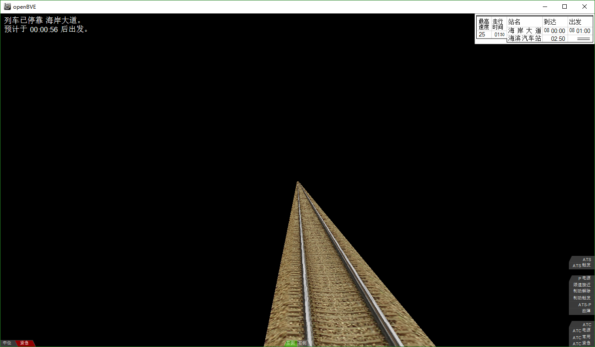
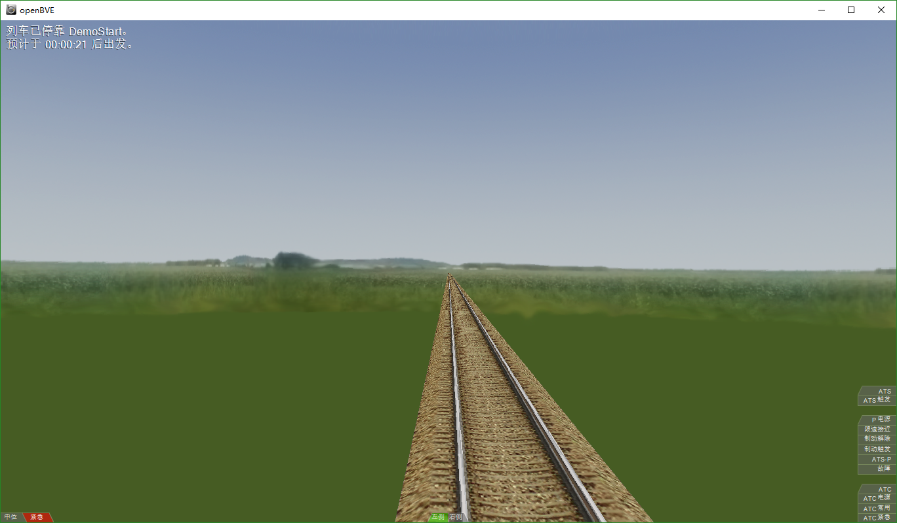
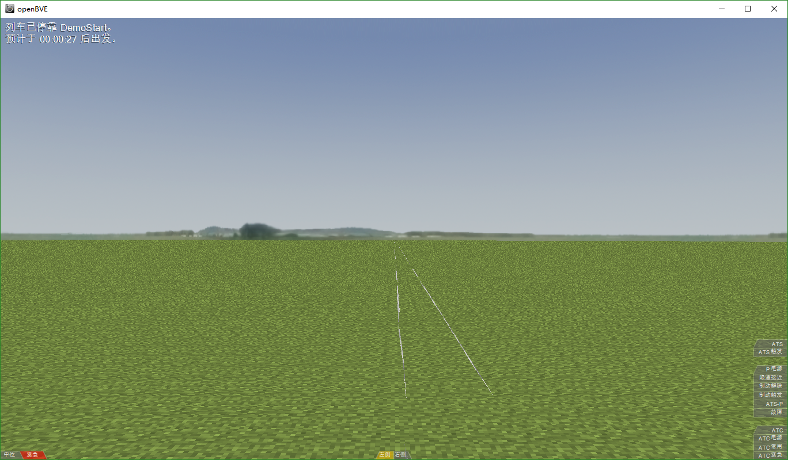
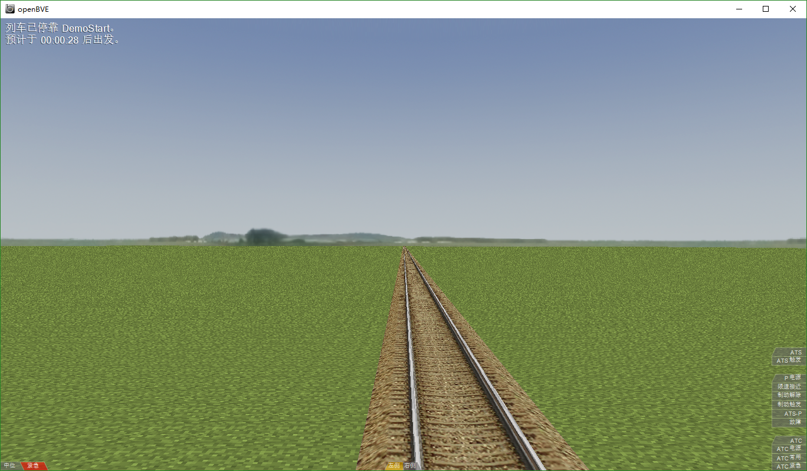
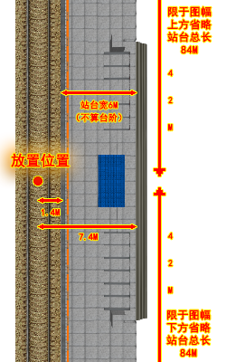
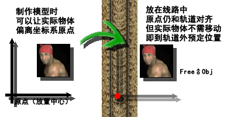
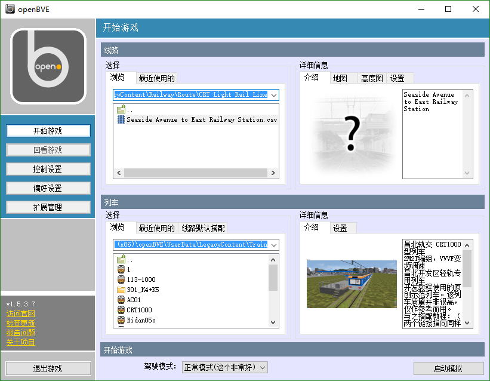

很明显，我们上次编写的这条线路在可玩性和美观程度上显然是非常令人叹息的。我们在这一节将要使用一些新指令来修饰它。虽然让它变得赏心悦目还有点困难，但是让它变得没有如此枯燥单调应该还是不用费很大功夫的！
我们要对这条线路进行以下的魔改：
- 站名
- 背景
- 地面
- 站台
- 改变线路文件名称和文件夹
我们这次要制作的线路是昌北轨道交通开发区轻轨线（虚构），这条线路的第一站叫作海岸大道，第二站叫作海滨汽车站，其间间距800米。第一站8:00:00到站，8:01:00发车，最少停车30秒；第二站8:02:50到站，8:03:30发车，最少停车20秒；两站都在右侧开门。此外，由于站台实在没那么长，停车时实际只允许前后有两米的误差。现在这条示例线路的设计显然是不一样的，所以我们要稍加修改，使它符合实际。
怎么修改呢？我们上一节看到Track.Sta指令的参数中是可以设置站名的，我们只要更改它们即可。至于站距嘛，只要修改两个车站和停车点指令的生效位置即可。比如说第一站在1000米处，第二站在1800米处，它们的间距就是800米。简单吧！
至于为什么把第一站放在1000米呢（您也可以根据实际情况调整）？因为主轨道位置是从0开始的，不能是负数，所以如果我们的第一站放在0位置，我们就不能向后扩展线路了，比如说加一个回库线之类的。我们就不如预留出一点空间来预备以后可能有的扩展（当然，您用Track Shifter程序到时候再调或者$Include法(注意这一个不支持Hmmsim)的话您随意）。另外，列车车尾后面没有轨道或者半个甚至全部车身悬空（停车位置是0，车头后面就没轨道）真的不怎么好看。
所以，第一站的位置应该是1000，第二站应该是1800。另外，既然改成了右侧开门，站台放在右面，停车标就应该放在左面(-1)（因为列车已经和标志对齐，图中看不到，可在车外视角看到，也可在停靠第二站时看到），前后误差都改成2米。您应该把With Track的指令改成这样：
With Track 1000 .Sta 海岸大道;8.00;8.01;;R;;;;30 1080 .Stop -1;2;2 1800 .Sta 海滨汽车站;8.0250;8.0330;;R;;;;20 1880 .Stop -1;2;2
请您不要走马观花，而是跟着教程一起编写实践代码，来获得最好的效果。
您应该会发现Track.Stop指令的位置都在Track.Sta指令后面80米处。这可不是个巧合，这是因为CRT1000型列车的长度正好是80米。
您可以把到达时间、发车时间和停车时间填入正确的位置。请注意OpenBVE的时间格式中，小时和分钟之间不是冒号而是小数点，分钟和秒之间没有点。
启动游戏测试，按下Ctrl+T打开时刻表，您应该可以看到站名已经被正确地修改了，时刻也有正确地显示（最后一站没有显示发车时间是因为它目前是终点站，等我们延长线路增加更多站点后就有了）。调转镜头转向后方（F2切换至车外视角，方向键移动方向），您可以看到列车后面也还有一大段轨道。
小技巧：停车一分钟对于调试来说太慢了？您可以按下Ctrl+J启用倍速。另外，Ctrl+A可以启动游戏内置AI驾驶，让您能更加专注地调试外景效果。
一片黑漆漆的天空是否让您感到堵心？如果我们加上一片蓝天，显然就会赏心悦目很多。
点击页面顶部的“查看线路文件格式文档”按钮，您可以查找有哪些命令是和设定背景有关的——除了看教程，阅读文档对于学习各个指令的用途和用法注意事项也是很有用处的。如果想要实现一个功能，您可以先在文档中搜索有没有指令与之相关。善用浏览器的搜索功能。一般来说，您可以在电脑浏览器中按下Ctrl+F，或者在手机浏览器的菜单栏中找到搜索功能。在页面中搜索背景，您可以找到许多匹配内容，并发现与载入和设置背景相关的指令主要有两个，它们是：
Texture.Background(背景材质编号).Load 文件名 和 Track.Back 背景材质编号。在OpenBVE中，任何种类的模型（如轨道、外景物体等），以及材质（如背景），都需要在使用前先被载入，并分配一个固定的编号。在实际使用切换时，再指定需要使用哪个对应编号的模型或材质。
例如，如果您想要让线路中在0米到100米之间使用木制轨道，而在100米之后使用水泥轨道，您应当编写这样的代码：
;前面其他部分省略。这是演示代码，演示编号的概念，不要真的输到游戏线路里，输进去也不能用 With Structure .Rail(0).Load 木制轨道.csv ;加载木制轨道的模型，并将其设为编号0（文件名只作演示， .Rail(1).Load 水泥轨道.csv ;加载水泥轨道的模型，并将其设为编号1 并没有实际文件） With Track 0, .RailType ;0 ;从 0 米处开始使用0号木制轨道 100, .RailType ;1 ;从100米处开始使用1号水泥轨道
材质也是同理，先载入，再指定。不过，其实上面的例子中0米处那条RailType指令使可以省略的，设置背景时这一次我们也只需要使用Texture.Background.Load一条指令，而暂时不需要使用后者。为什么呢？因为我们这次只需要使用一个固定的背景，而不需要来回切换。而在默认情况下，OpenBVE会自动从线路的最开始位置 采用编号为0的背景，无需进行指定。这也对于轨道有效，这也就是为什么我们在最简单线路中只使用Structure.Rail(0).Load而没有使用Track.RailType就自动使我们指定的轨道显示在线路中了。不过，这个只对于需要从线路的一开始位置就使用0号的情况适用。
好了，我想我的“废话”已经说得够多了。是时候实际地给我们的线路加个背景了。
按照上一节讲过的方法使用Notepad++打开DemoRoute线路文件。因为是Texture命名空间中的指令，我们把它添加到With Texture的下方，像这样：
With Texture .Background(0).Load zbx1425/tutorial/background/plain1.png ;载入一张平原主题的背景图片
完成改动代码后，启动游戏（或者使用Route Viewer），您应当看到类似于以下的画面。我们的线路终于不是漆黑一片了！
图片必须被存放在LegacyContent/Railway/object文件夹内。在载入图片时，必须使用一个相对于object文件夹的相对路径（要知道大家可能都把openBVE装在不同的盘不同的地方等等，要是你填个C:/……/……，到了个把openBVE装在D盘的人或者用Linux的人手里不就找不着了）。什么是相对路径呢？很简单。相对于object文件夹的相对路径就是它的完整路径（如果您不了解的话，您可以通过这个方法获得：选中文件，按下并按住Shift键，然后点击右键在菜单栏中选择“复制为路径”，即可复制它的完整路径）去掉 object/ 以及之前的所有内容。此外，按照UNIX路径统一标准考虑，您应当把反斜杠(\)换成正斜杠(/)。上方这段代码就是个很好的例子。
我们在LegacyContent/Railway/object/zbx1425/tutorial/background文件夹内存放了好几张我们自制的背景图片。您可以修改代码来换一换、试一试，看看哪张更好看。
请您务必试一试。
虽说咱终于头顶青天了，但是咱可还得脚踏实地啊！看着这列车运行在悬空的危险轨道上，真是让我想吟诗一首——“力微任重久……”啊不，“噫吁嚱，危乎高哉！蜀道之难，难于上青天！” 为了有效地改善轨道交通的运营安全状况，避免艾萨克·牛顿爵士从墓园爬出打砸地铁公司的惨案时有发生，我们认为还是把轨道放在地面上较为稳妥一点。
照样是查找文档，我们发现有关于地面设定的指令主要是这两个：
Structure.Ground(地面模型编号).Load 文件名 和 Track.Ground 地面模型编号熟悉的配方，熟悉的味道！和刚刚设定背景几乎一模一样！我已经详细地讲过如何设置背景了，这里就偷下懒吧，反正您如果前面仔细读了就会懂。因为我已经讲过了的原因，我们这次只需要使用第一个。因为是Structure命名空间中的指令，我们把它添加到With Structure的下方代码的末尾。别一手滑把已经写好的载入轨道模型的那行删了。像这样：
With Structure .Rail(0).Load zbx1425/tutorial/rail/gndblst0.csv ;别手滑把这个删了！删了轨道就没了。 .Ground(0).Load zbx1425/tutorial/ground/mcgrass.csv ;载入一个草地
完成改动代码后，启动游戏（或者使用Route Viewer的F5刷新功能），您应当看到类似于以下的画面。牛顿先生终于可以——诶等等！
什么鬼啊？！轨道哪里去啦？这怎么还一闪一闪的？牛顿先生气得都要螺旋飞天了啊！
原来，OpenBVE这个懒家伙默认会把地面搁在垂直位置0米处——也就是轨道的顶端。这样一来，地面就不是衬在轨道下方，而是糊在轨道上方了。怪不得轨道不见了。至于那个一闪一闪的东西嘛……这个的专业术语叫作深度冲突。游戏的三维渲染引擎会通过一系列数学计算来确定物体之间的位置关系，比如说轨道和地面哪个在前、哪个在后，哪个应该遮挡哪个。可是轨道顶端的垂直位置0米，地面的默认位置也是垂直位置0米——这下它俩就重叠了！（现实世界里肯定不会有两个物体完全重叠，就算一张纸还有零点几毫米的厚度呢）这下游戏就搞迷糊了——它俩到底哪个在上啊？所以就出现这种一闪一闪的尴尬情况了。
修改办法很简单。使用Track.Height指令，它指定地面距离轨道的距离。由于在这个教程中我们制作的轨道是0.3米高的，我们也只需要把它设为0.3即可。游戏接到这条指令后将会调整地面位置，使它位于轨道顶端的下方0.3米处，也就是轨道的底部。因为我们想让它在线路一开始就生效，我们把它加到主轨道位置0的地方，像这样：（请您务必搜索查看文档中对此命令的解释，来获得更详细的信息）
With Track 0 .Height 0.3 ;正确设置地面的位置 1000 ;不要手滑删掉下面的这些代码。 .Sta 海岸大道;;;;L;;;;30
完成改动代码后，启动游戏（或者使用Route Viewer的F5刷新功能），您终于可以看到稍微正常点的画面了。让我们一齐恭送艾萨克·牛顿爵士满意地回到坟地。牛顿先生一路走好，RIP。愿天堂没有日本高中生。
此外，您应当记住如果不需要完整游玩线路的功能（如报站，站名等），使用Route Viewer来查看线路是更加方便的——您只需按下F5就可看到最新修改成果，而不需退出重进缓慢加载等繁琐过程。
现在这条线路有了地面和车站，但是还没有站台，乘客只能使用跳跃法上下车，造成了很大的不便。为了避免日益增多的摔伤事故不发生，我们要为车站安装站台。
安装站台的本质就是添加模型。自然，按照和前面一样的道理，先加载，再使用。我们分别在Structure和Track一节内添加这样的代码，来给两个车站加载和放置我们给您准备的这个设计精美的站台。
With Structure ;省略上方内容 .FreeObj(0).Load zbx1425/tutorial/platform/ground84.csv ;载入84米长的地面站台 ;省略Texture, Cycle, Signal分节 With Track ;省略 1040 .FreeObj ;0 ;省略 1840 .FreeObj ;0
以后为了节省篇幅，在示意添加代码时就像这样省略不必要的信息了。例如，如果要向Track命名空间添加内容，会像这样给出对应的主轨道位置信息，让您插空添加在对应位置（例如，此处1040原先没有出现所以把这个新位置添加在1000的Sta和1800的Stop之间，若已出现则直接将指令加进该位置的其他指令之后），其他章节则添加在末尾即可。
这里出现了一个新概念叫做FreeObj。顾名思义，它的意思当然是免费的物体——啊不，自♂由的物体。自由的意思就是它可以单独地，无依无靠地被放在任何位置，不依赖轨道或任何东西，不像Rail只能用于轨道，Ground只能用于地面。至于怎么个“任何位置”法，我们来查阅一下文档里对它的解释。
轨道编号：一个非负整数，指定这个物体要被放在哪一条轨道旁。
外景物体模型编号：一个非负整数，指定要被放置的物体模型。默认值是0。
水平位置：物体距离轨道中心的水平距离。默认的单位是米。正值代表向右，负值代表向左。默认值是0。
垂直位置：物体距离轨道中心的垂直距离。默认的单位是米。正值代表向上，负值代表向下。默认值是0。这个距离是直线距离，在弯道处并不随轨道弯曲。
偏转角：该物体在XZ平面上转动的角度（相对于上方顺时针）。默认值是0。
俯仰角：该物体在YZ平面上转动的角度（相对于左方顺时针）。默认值是0。
侧倾角：该物体在XY平面上转动的角度（相对于后方顺时针）。默认值是0。
该指令在指定轨道旁放置一个“自由”的外景物体。在放置前需要先用Structure.FreeObj载入模型。
嗯。如果要放置这个物体，只需指定轨道编号（可以创建多条轨道，这个下一讲再讲解，现在我们留空表示主轨道）和物体模型编号（还记得是怎样通过模型编号来选择已经加载的模型吗？），就可以把它放在主轨道的这个指定的主轨道位置上。另外，默认会把物体放置在轨道上表面的正中央，可以通过水平位置和垂直位置调整它的位置。移动完了之后，还可以通过三个角度来旋转它。此外，还有一个Track.Form指令可以用于创建站台，但是因为它创建的站台较为单调，而且这次要制作的线路上没有曲线站台等能发挥它特长的场合，我们就不介绍和使用了。

好了，现在我们打开游戏，应该就能看到站台正确显示了。不过您可能会问，既然FreeObj默认会放在轨道正中间，我们又没有调整站台的位置，为什么站台没有出现在中间，而是乖乖跑到了右侧呢？
这是个好问题。事实上，说的便于理解一点，它的确是被放在轨道正中间的，但是位于正中间的是物体的坐标系原点，或者通俗来说叫放置中心，它并不一定是物体物理意义上的中心。所以，只要在制作模型的时候偏移物体的位置，在使用时就可以辅助进行定位了。右面是我画的一张渣图，希望您能明白：
现在我们来看左边这张图。为了方便各位线路开发者便捷地使用站台，教程资源中的站台已经提前设置好对齐位置。在默认的放置位置时，它的左边缘距轨道1.4米，右边缘距轨道7.4米，站台宽6米，长84米（两侧各有两米对标容错余地），中心在站台正中央。这样，它就可以正正好好地放在正确的位置，并和列车贴合（还留出了一点列车与站台之间的空隙呢）。
另外的一些模型，例如草地、树木等，大多数的放置中心就是它们的底部中点。对于这些模型，就需要指定位置，来让它们美丽地生长在轨道旁边，而不是杵在轨道中间等着挨撞了。
我想您也能明白为什么站台是被放在1040而不是1000或1080了。因为它的放置中心是在站台中部的，而不是头部或尾部（上边那幅图也说明了这一点）。这样它以这一点为中心分别向前后延展42米，正好到达预定的停车位置。
我们以后还会经常用到Track.FreeObj这条指令。实际上，OpenBVE的线路外景物体绝大部分都是通过这个方式被放置的。哦对了，如果一切正常，效果应该如下图所示（车外视角）：
注意在这个视角并看不到停车牌。这是因为停车牌因为OpenBVE的沿袭臭毛病只能从前方被看到。不管怎么说，添加站台肯定又给我们的游戏线路场景美观性提升了114514个档次（确信）。唐突恶臭的我事屑，我自裁（逃
为了便于之后管理，我们将我们这条线路的所有内容（现在只有一个DemoRoute.csv）都移动到一个文件夹里。我们在Route文件夹中新建一个名为“CRT Light Rail Line”的文件夹(照顾Hmmsim开发者这里用英文)，然后将DemoRoute.csv移动到它的里面。
然后，我们将DemoRoute.csv重新命名为“Seaside Avenue To East Railway Station.csv”。这可以明显地告诉玩家这条线路的内容，也标志着我们不仅是在做一条示例线路，而是在做实际的线路开发。在实际的开发中，最好给线路文件和文件夹起一个易于理解的名字。
进入游戏，您可以在选择菜单中看见线路已经位于文件夹里了。因为线路的组成部分不仅包括线路文件，这样做也可以避免我们这条线路的文件和其它的混在一起。
● 思考
- 如果想要将背景换为那张黄昏主题的背景，应该如何修改？
- 由于我们的轨道、背景和地面都是从0开始的0号，我们省略了一些代码（上面有提到）。如果不省略，应该怎样写？
- 如果我们想要把站台从轨道右侧改到左侧，应该如何修改？
- 如果列车在车站从23:59:45停车到第二天的00:02:15（有些线路是有夜车的哦），应该怎样写？
请您不要直接前进到下一讲。请自己先想一想，试一试。点击下方绿色按钮可以进入答题页，互动答题，查看答案。
在这一讲中，我们已经成功地对这条简单的线路进行了一些简单的改动，使它更加好玩了。在下一章中，我们将学习更加高级的线路编写技能，使我们的线路变形。我们建议您将本章重读几遍来深刻了解和记忆本章内容，而不是走马观花地不停翻页。在您准备好后，请从上方线路图中选择下一讲。